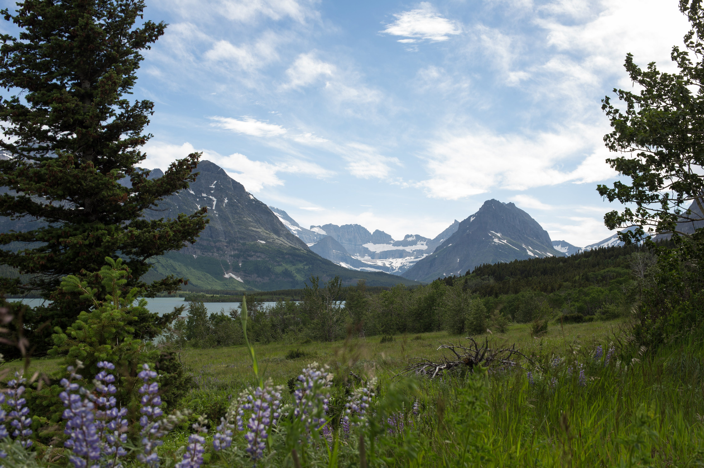

In alaska me and my dad both tryed fly fishing for the first time which was fun because we both caught a total of 4 fish. we got to go to a popular hot springs. which was fun and relaxing. But on the other hand we had to sit in a car for 1 week to get there. we also stoped throught vancover and we got to go to the first ever starbucks made. it was supposed to take less time to get to alaska from vancover but there was wild fires everywhere so we had to take a different route. but i was glad to be back home at the end of the trip because my leg were allways sore.